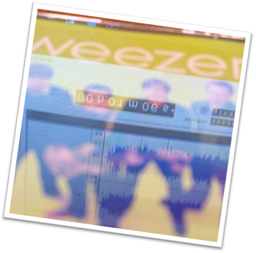

weezer 25

To celebrate the 25th anniversary of the Green Album, I have compiled this set which contains the album in its entirety as well as B-Sides, Demos (whether full-band or just Rivers Cuomo), and plenty of live material. You may notice differences in the remasters, and that is because to achieve the more dynamic sound as well as making a more interesting listening experience, I opted to base the remaster off the 2001 leak of the album. This has a lot of changes, some insignificant, others much more so, but the leak was unmastered, meaning the compression added to the final album is nonexistent in that version.CD #1
Don't Let Go (2026 Remaster)
Photograph (2026 Remaster)
Hash Pipe (2026 Remaster)
Island In The Sun (2026 Remaster)
Crab (2026 Remaster)
Knockdown Dragout (2026 Remaster)
Smile (2026 Remaster)
Simple Pages (2026 Remaster)
Glorious Day (2026 Remaster)
O Girlfriend (2026 Remaster)
Oh Lisa (2026 Remaster)
Sugar Booger (2026 Remaster)
Teenage Victory Song (2026 Remaster)
Starlight (2026 Remaster)
Brightening Day (2026 Remaster)
Everybody Go Away (2026 Remaster)
I Do (2026 Remaster)
Always (2026 Mix)
Hash Pipe (Jimmy Pop Remix)
Hash Pipe (Chris Vrenna "Kick Me" Remix)
Hash Pipe (Chris Vrenna "Under Glass" Remix)
Island In The Sun (Live At Y100 Sonic Studios/2001)
Don't Let Go (Live At AOL Studios/2005) this is also remastered but the track title was too long
Island In The Sun (Live At AOL Studios/2005)
CD #2
Burning Sun (Home Demo)
My Best Friends Are Gone (Rivers Home Demo)
Teenage Victory Song (Rivers Home Demo)
Hide Into The Sun (Rivers Home Demo)
Gimme Something (Rivers Home Demo)
You Look So Free (Rivers Home Demo)
Yer Fun To Play With (Rivers Home Demo)
Hole In Time (Rivers Home Demo)
I Wish You Luck (Rivers Home Demo)
No Way (Rivers Home Demo)
Photograph (Live in Seinajoki, Finland/2001)
Island In The Sun (Live in Seinajoki, Finland/2001)
Simple Pages (Live in Seinajoki, Finland/2001)
Hash Pipe (Live in Seinajoki, Finland/2001)
Knockdown Dragout (Live in Seinajoki, Finland/2001)
O Girlfriend (Live in Toronto, Ontario/2001)
Glorious Day (Live at The Knitting Factory/2001)
So Low (Live at The Knitting Factory/2001)
Smile (Live at The Knitting Factory/2001)
Hash Pipe (Live at The Knitting Factory/2001)
Glorious Day (Live in Long Beach, California/2001)
Crab (Live in Madison, Wisconsin/2001)
Smile (Live in Madison, Wisconsin/2001)
Don't Let Go (Live in Columbus, Ohio/2001)
Single-Exclusive Tracks
Photograph (Single Mix/2026 Remaster)
Always (Stripped Down Mix)
no.
This project is 100% unofficial and unaffiliated with Weezer, Rivers Cuomo, or Geffen Records. I do not intend to take sales from them, and I encourage you to pick up a copy of the album if you haven’t.